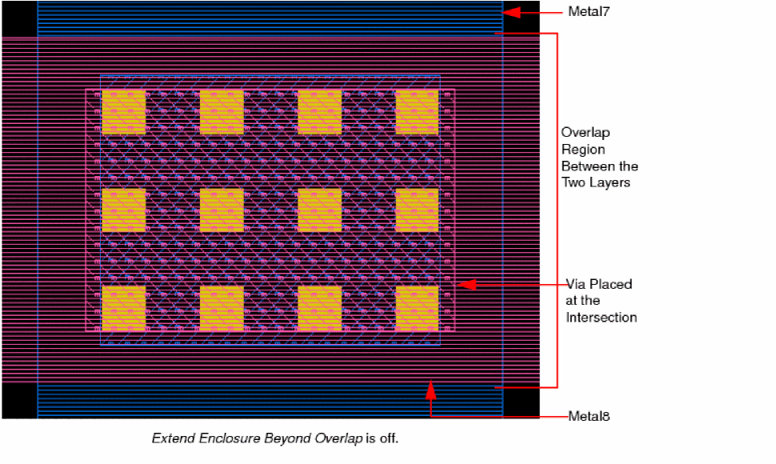
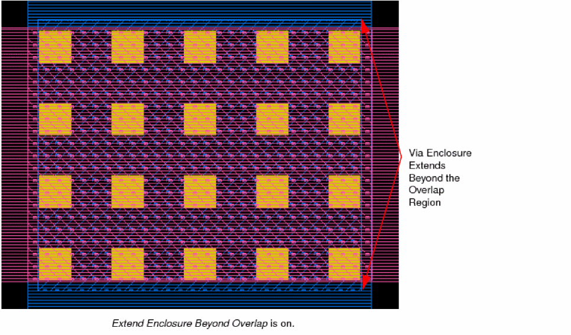
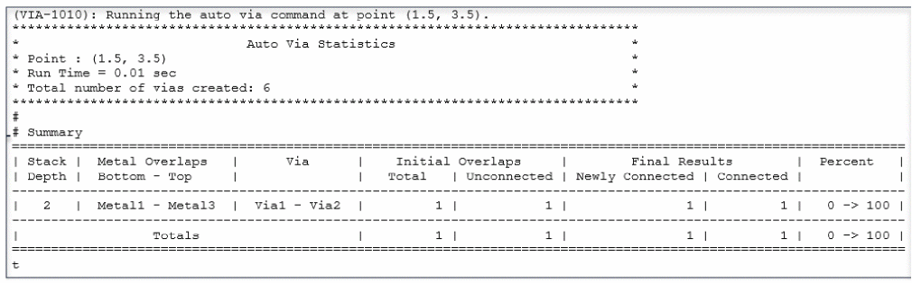

Creating a Via Automatically in Single and Stack Modes
In the Create Via form, use the Compute – From Shape(s) check box to generate vias automatically in Single or Stack modes when you click the overlap region of intersecting shapes.
-
In the layout window, choose Create – Via or click the Create Via icon
 on the Create toolbar.
on the Create toolbar.
Alternatively, right-click any free space in the design canvas to display the Layout shortcut menu and select Create – Via.
The Create Via form opens. - Use the Options button if you want to set the via creation options using the Create Via Options form. For example, you can enable Extend Enclosure Beyond Overlap to extend via enclosures beyond the overlap region between two intersecting shapes.
-
Select Mode for creating vias in the Create Via form.
-
If you select Single mode, do the following:
i) Select the Compute From Shape(s) check box.
Notice that the fields for specifying the Cut Class, cut Rows and Columns, and enclosure values are grayed out.
ii) Select a viaDef from the Via Definition field.
Ensure that the selected viaDef matches at least one of the two intersecting shapes for generating the automatic via.
iii) In the Cut section, specify the Width, Length, Spacing X and Y values. -
If you select Stack mode, do the following:
i) Select the Compute – From Shape(s) check box.
Notice that the fields for specifying Top Via Rows and Top Via Columns are grayed out.
ii) Select the start and end layers for creating the via stack.
iii) Select a viaDef for each layer pair from the Via Definition list.
-
If you select Single mode, do the following:
-
Click in the overlapping area of the intersecting shapes on the canvas to create a via or stacked via.
The following images show an example of a Single mode via created at the intersection of two shapes when the Compute – From Shape(s) check box is selected. The vias in the first image are generated when the Extend Enclosure Beyond Overlap check box is not selected in the Create Via Options form. The second image illustrates the enclosure extension when the Extend Enclosure Beyond Overlap check box is selected.
 - Continue to place vias at the required locations.
-
Press
Escor click Cancel on the form to finish creating vias.
A statistics report is generated for auto via in the form of a table in the CIW. This report is best viewed when the default CIW font is mono.

Auto via considers stopped layers as defined by the connectivity extractor in the virtuosoDefaultExtractorSetup constraint group. For more information, see
Related Topics
Return to top